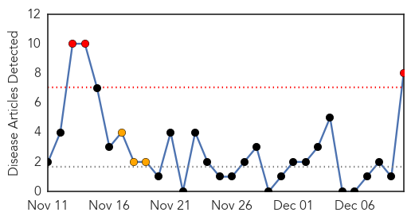
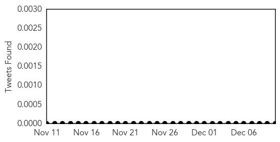
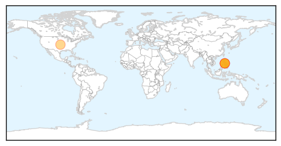
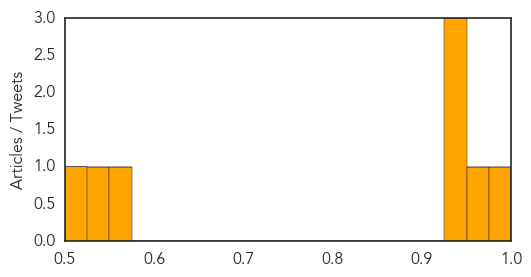

Bubonic Plague
30-Day Web Trend
7 alerts, 0 warnings

30-Day Twitter Trend
1 alerts, 0 warnings

Article Locations

Article Confidences

Top Articles:
-
No articles found for Dec 10, 2014
Top Tweets:
-
No tweets found for Dec 10, 2014
Measles
30-Day Web Trend
3 alerts, 3 warnings

30-Day Twitter Trend
0 alerts, 0 warnings

Article Locations
Article Confidences
Top Articles:
- 0.993
- Measles back in Michigan
- 0.953
- Confirmed cases of measles now at 5 in Grand Traverse, Leelanau counties, health officials say
- 0.949
- Traverse City Record-Eagle: Local News
- 0.944
- Health Dept. Confirms 5 Measles Cases in Grand Traverse & Leelanau Counties
- 0.940
- Two cases of measles confirmed in Michigan
- 0.560
- Lower Immunization Rates In Grand Traverse Region
- 0.530
- Yes, Syphilis Sailed the Ocean Blue
- 0.517
- More Measles Cases Reported in Michigan
Top Tweets:
-
No tweets found for Dec 10, 2014